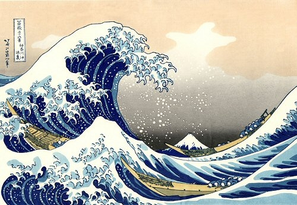
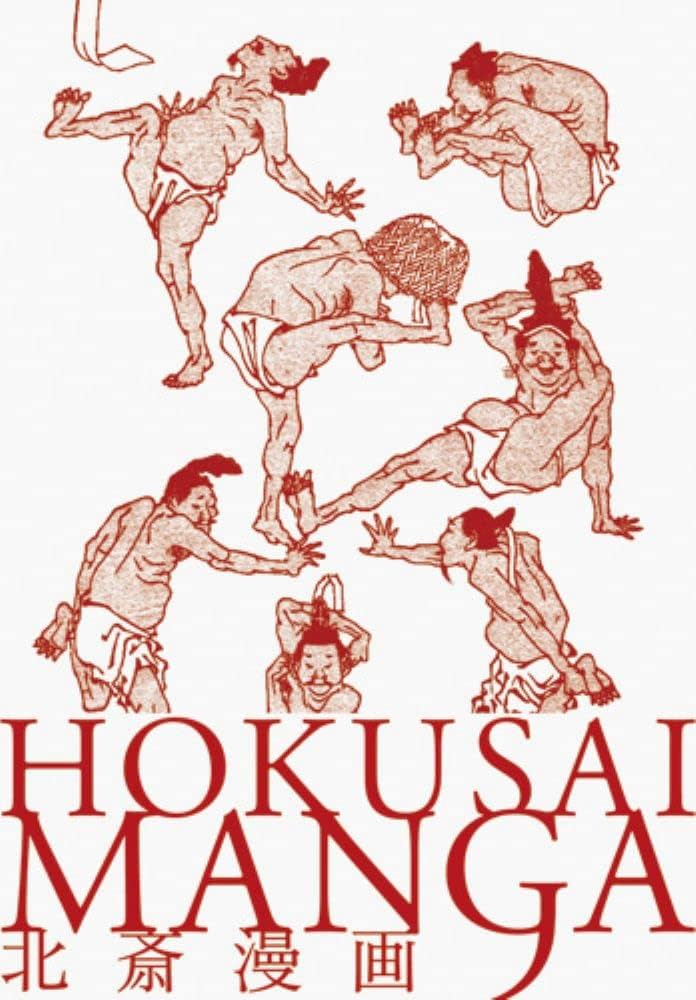

Katsushika Hokusai: Um Gênio Artístico Japonês
Katsushika Hokusai (1760–1849) foi um proeminente pintor e gravurista japonês da era Edo. Nascido no distrito de Sumida, Tóquio, ele se tornou um dos artistas mais icônicos do Japão, deixando um legado duradouro em todo o mundo. Hokusai começou sua carreira artística como aprendiz de gravura, e ao longo de sua vida, explorou várias formas de arte, incluindo pintura, ilustração de livros e, mais notavelmente, ukiyo-e, uma forma de gravura em madeira. Ele adotou vários pseudônimos ao longo de sua vida, mas ficou mais conhecido como Hokusai. Sua série famosa "Trinta e Seis Vistas do Monte Fuji" é celebrada por suas paisagens deslumbrantes e influenciou artistas e admiradores ao redor do mundo. Outra obra icônica é "A Grande Onda de Kanagawa", parte da série "Trinta e Seis Vistas do Monte Fuji". Hokusai continuou a criar até seus últimos dias, e sua dedicação à arte e inovação em técnicas influenciaram gerações subsequentes. Seu impacto na arte japonesa e global é imensurável, solidificando seu lugar como um dos grandes mestres da história da arte.
Principais obras:
| Ukiyo-e Paisagístico - "Trinta e Seis Vistas do Monte Fuji" | Gravuras Ukiyo-e Cotidianas | Ilustrações de Livros - "Hokusai Manga |
| Uma das contribuições mais significativas de Hokusai foi na gravura ukiyo-e, especialmente em suas representações do Monte Fuji. A série "Trinta e Seis Vistas do Monte Fuji" é uma obra-prima, destacando sua maestria em capturar a natureza em diferentes estações e ambientes. | Além das paisagens, Hokusai produziu uma ampla variedade de gravuras ukiyo-e que retratavam a vida cotidiana durante o período Edo. Suas representações de atores kabuki, cortesãs, cenas urbanas e eventos populares eram marcadas por detalhes ricos e cores vibrantes. | Hokusai Manga, apesar do termo "manga", não se refere ao estilo moderno de mangá, mas sim a uma série de ilustrações humorísticas e esboços que cobrem uma gama diversificada de temas, desde animais até seres mitológicos e cenas do cotidiano. |
|  |  |